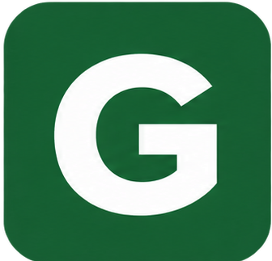
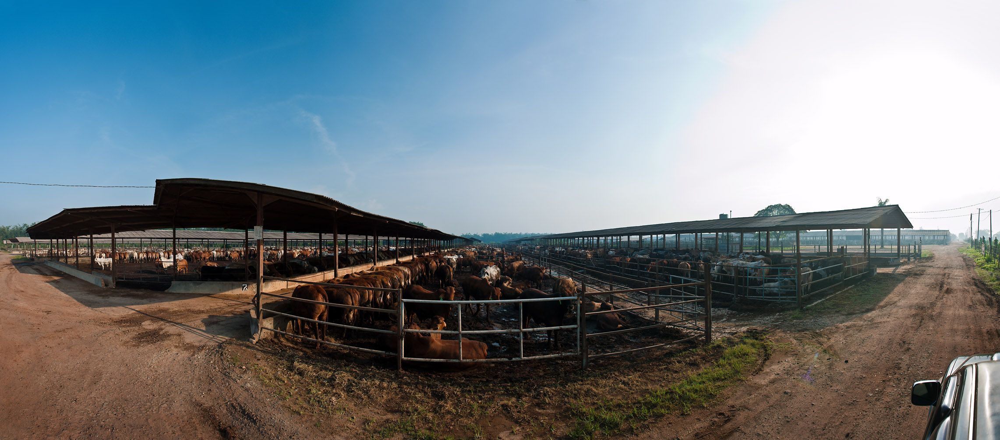
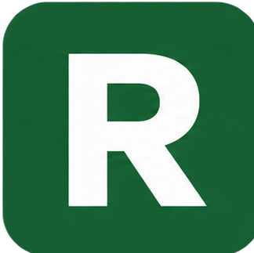
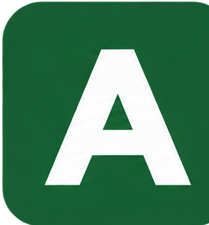
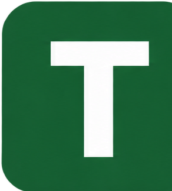

Governance (Tata Kelola)
Menjunjung tinggi standar integritas dan etika tertinggi.
Mengenal identitas dan informasi umum PT GGLC Dairy Operation.

PROFIL SINGKATMengenal lebih dekat perusahaan, kegiatan operasional, dan peran PT GGLC Dairy Operation dalam industri peternakan sapi perah dan produksi susu.
Deskripsi perusahaan: PT GGLC Dairy Operation merupakan perusahaan yang profil, kegiatan usaha, dan operasionalnya disajikan melalui halaman ini sebagai sarana informasi bagi pengunjung untuk mengenal perusahaan lebih lanjut.
Prinsip-prinsip dasar yang memandu setiap langkah GGF, membentuk budaya kerja, dan mendorong untuk senantiasa menghadirkan keunggulan dalam segala hal.

Menjunjung tinggi standar integritas dan etika tertinggi.

Menjadi mitra bisnis yang tepercaya dan dapat diandalkan.
Melakukan perbaikan berkelanjutan dan selalu melangkah lebih jauh.

Cepat, adaptif, dan tanggap terhadap setiap tantangan.

Berkolaborasi dengan rasa kepedulian untuk meraih tujuan bersama.